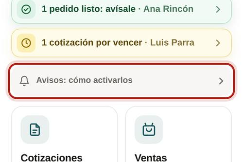
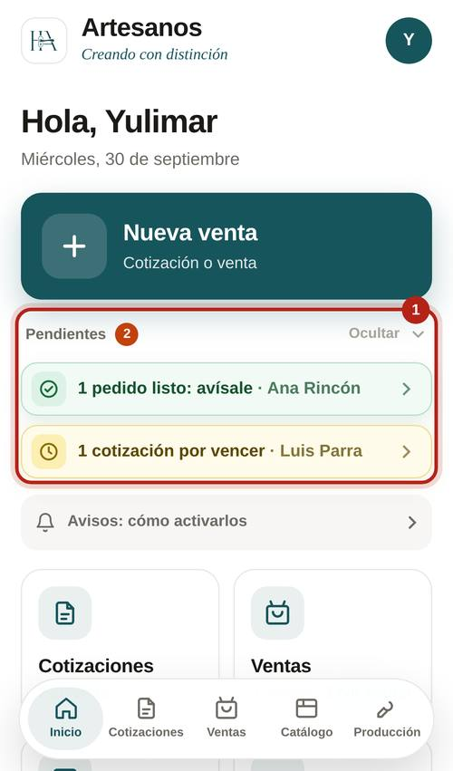
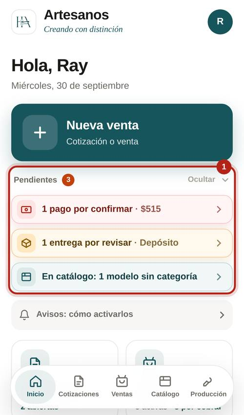

Una sola vez, en cada teléfono.

Arriba en Inicio. Cada fila dice qué pasa; tócala y te lleva a resolverlo.


Qué dice, a quién le llega y qué hacer.
A quien registró el pago. El pago llegó; si era el primero, el pedido pasó a fabricación.
A quien registró el pago, con la nota de Ray.
A quien hizo la venta. El taller terminó.
A quien entregó el material.
Ventas y pagos
A los administradores (menos a quien la registró). Primer pago de un pedido.
Solo a Ray. Otro pago de un pedido.
A los administradores. Quién la canceló y cuánto devolver.
Taller
A los administradores. Llegó un pedido al taller.
A los administradores. Dice lo que sigue.
A los administradores. Un trabajador pide un adelanto.
Depósito
A los administradores. Bajó del mínimo o la vendedora avisó.
Solo a Ray. La segunda es una entrega rara.
Para que sepas qué recibe cada trabajador.